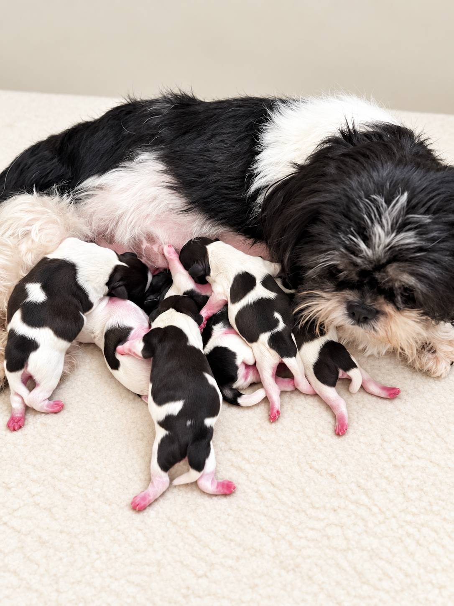
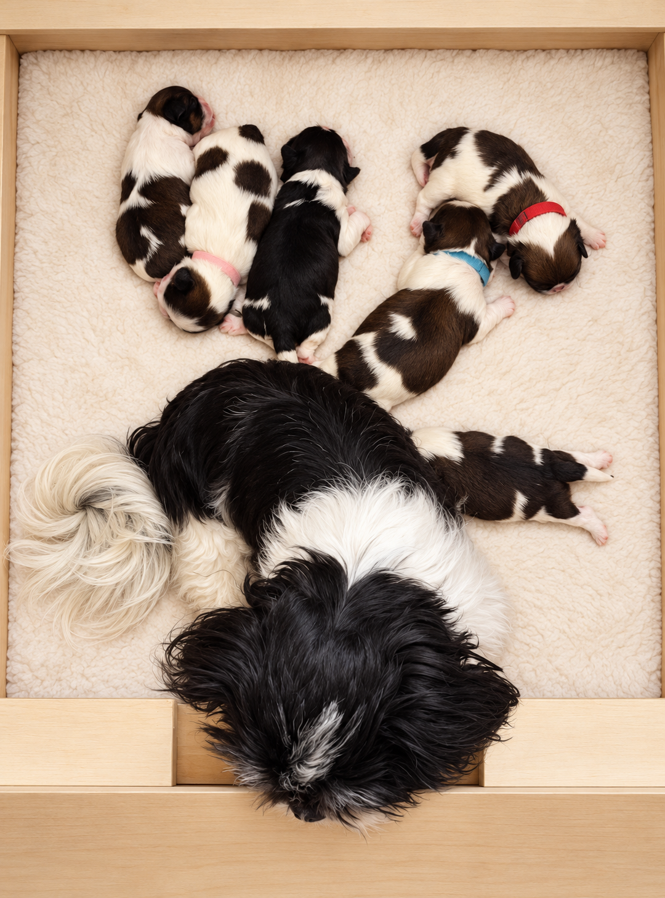
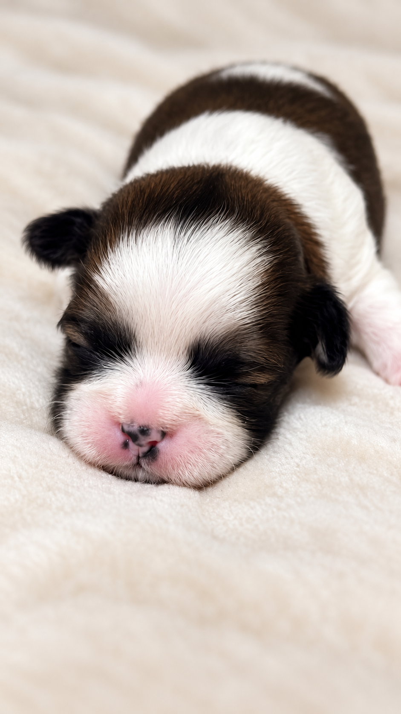

Your next family member
Our Puppies
Interested in welcoming a Balamani Shih Tzu into your home? Contact us for current puppy availability and to discuss what you are looking for.
Important notice
Before Reserving a Puppy: Please Read
Welcoming a puppy into your family is a joyful experience and a lasting commitment. Before reserving a Balamani puppy, please consider:
Meet us before reserving
Puppies cannot be reserved online. Reservations are made in person, after your family has met our dogs and the breeder. This meeting gives us the opportunity to discuss your circumstances, answer your questions and assess whether a Balamani puppy is a suitable match for your household.
A puppy is a lifelong commitment
A puppy is a living companion, not a toy to be put aside when the novelty wears off. Welcoming a dog means committing to their care throughout their life: providing daily attention and companionship, feeding, grooming, keeping them clean, cleaning up after them and meeting their health and exercise needs. Your puppy will grow into an adult dog who continues to depend on you for love, care and security.
- Do you have the time? Does your daily schedule allow you to provide the attention, companionship, training and care a puppy needs?
- Can you commit to weekly visits? Reserving a puppy means committing to one visit each week, lasting one hour, from when your puppy reaches two weeks of age until they are ready to go home. These visits help your puppy become familiar with you and begin building a bond, so they join a family they already know.
- Is your household ready? Can everyone at home help provide a safe, calm and welcoming environment for an eight-week-old puppy?
- Are you willing to prepare your home? This may include securing gates, protecting electrical cables, keeping harmful items out of reach and creating a comfortable resting space.
Our puppies’ wellbeing comes first. We reserve the right to decline a reservation or placement if, following our assessment or during the visiting period, a family does not demonstrate the commitment needed to care for a puppy. This includes attending the agreed weekly visits and preparing a safe home.
Please reserve a puppy only when you are ready to meet these responsibilities. Our aim is to give every puppy a loving start with a family prepared to care for them.
Getting to know us
Choosing a puppy starts with a conversation. We are happy to discuss our dogs, answer your questions and help you learn more about life with a Shih Tzu.
Our puppies in pictures





